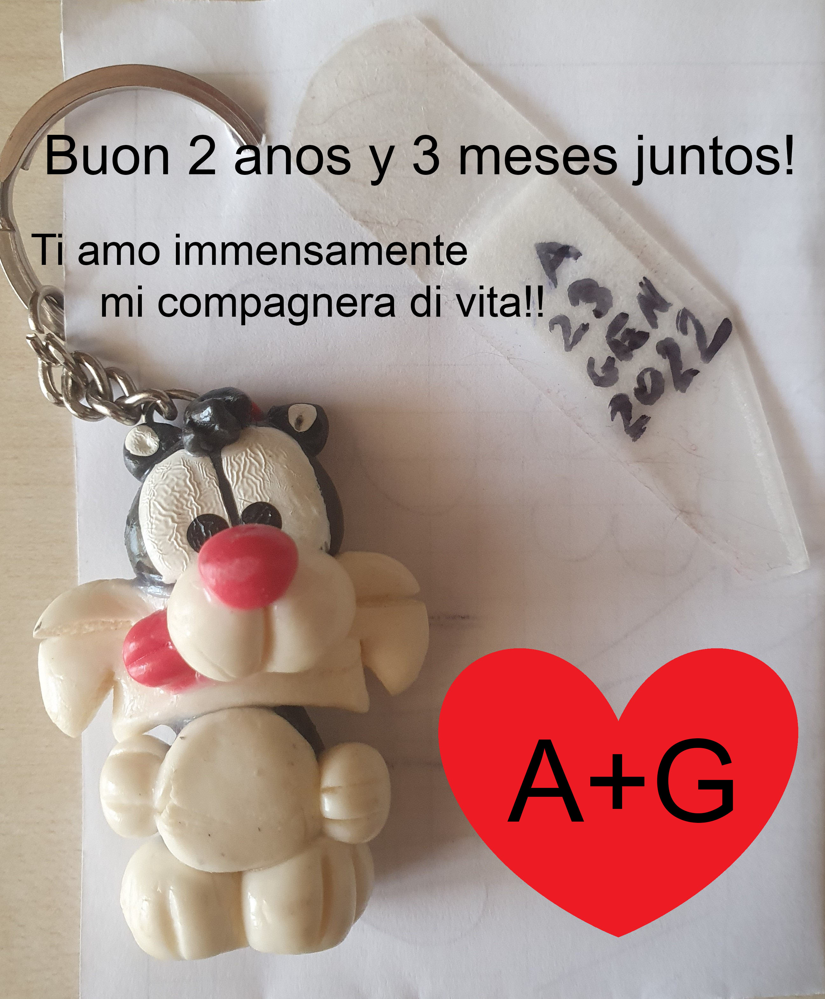

Querida vida mía,
Gracias por todo lo que haces por mí que es especial cada día y por todo tu precioso amor que me das cada día, gracias por darme cada día la felicidad de admirar tu dulce sonrisa y darme tus preciosos abrazos que me hacen sentir. en casa, a salvo de todo daño mientras escucho la dulce música de los latidos de tu corazón que mantiene viva a la persona más extraordinaria y única del universo entero. ¡Gracias por cada uno de tus dulces besos, más importantes que el oxígeno que respiro, que me mantienen vivo y me dan una fuerza tan infinita cada día que puedo tocar el cielo! ¡Quiero estar aquí todos los días y protegerte en mis brazos lejos de todo mal mientras mi alma se une a la tuya capaz de volverse una y capaces de superar juntas cualquier desafío! Cada día me encanta como sabes afrontar todo y como con tu fuerza infinita siempre logras completar cada desafío que la vida te pone, en el que pones pasión que sale de tu corazón cada día y en todo lo que enfrentas sabes cómo. para hacerlo único porque cada día eres el número uno en todo el universo! Me encanta estar aquí todos los días a tu lado para animarte, apoyarte y ayudarte y hasta en los momentos más difíciles estaré aquí a tu lado para animarte y nunca dejarte parar y hasta en los momentos de dificultad cerrar tu ojos y estaré aquí dentro de ti en el fondo de tu precioso corazón para hacerte levantar y abrazarte fuerte y exclamar que nunca te rindas porque con tu fuerza y determinación más fuerte que un huracán siempre sabes llegar a la meta. line y me encanta celebrar cada momento increíble y cada meta juntos que puedan lograr y tomo ejemplo de ustedes para afrontar mi trabajo con determinación y fuerza y gracias desde el fondo de mi corazón por enseñarme a nunca rendirme porque juntos somos ¡Un equipo increíble capaz de superar cada desafío y obstáculo que la vida nos depare! Gracias por todo el apoyo que me brindas y por estar aquí con tu dulce amor incluso en momentos que parecen imposibles y como por arte de magia logras borrar todo mal y hacerme sentir bien y gracias por protegerme mientras me abrazas. tus brazos que forman el universo infinito y único de tus dulces e increíbles abrazos donde quiero vivir por siempre y más allá a salvo de todo mal, mientras me encuentro con tu dulce alma que cada día guía mi camino hacia el camino correcto, el de tu dulce corazón que quiero proteger cada día con todo de mí, porque cada día mereces única y exclusivamente todo lo bueno y hermoso que la vida tiene para ofrecerte! Gracias desde el fondo de mi corazón por todo lo que haces por mí que es especial, gracias por pasar juntos estas inolvidables vacaciones y por apoyarme borrando todo el dolor de la pérdida del abuelo, gracias por todo el extraordinario trabajo que tienes. hecho para la página de mamá y me encanta cada cosa que haces, aunque sea pequeña sabes cómo hacerla única como cada publicación que haces donde usando la sencillez y tu pasión logras crear anuncios increíbles que han ayudado a mamá a aumentar su clientela. y me encanta hacer esto juntos y gestionar con ustedes todo esto y estoy segura que la página crecerá cada día gracias a todo el trabajo y pasión que ponemos juntos! Deseo que le saques el máximo provecho a tu trabajo como lo has podido hacer con la universidad ascendiendo en tercer año y por todo lo que has enfrentado y estoy seguro que tu jefe estará orgulloso de ti como lo estoy yo todos los días. y que esto te traerá infinitas nuevas oportunidades de crecimiento para el futuro y estoy orgulloso de ti cada día por todo lo que haces porque cada día eres y siempre serás el número uno en el universo entero! ¡Te amo inmensamente desde el fondo de mi corazón que existe sólo y sólo para ti para protegerte de todo daño! Te amo infinitamente en cuerpo y alma, tú que eres cada célula y molécula que me conforma y que me hace existir para protegerte en mis brazos y darte mi amor cada día y protegerte lejos de todo mal, tú que cada Los días son y siempre serán mi vida, mi oxígeno, mi alma, mi cuerpo, mi corazón, mi reina, la estrella más bella y única del universo entero, ¡mi todo! ¡Que Dios los bendiga todos los días y proteja nuestra asombrosa e increíble relación todos los días! ¡Felices 2 años y 3 meses junto a ti que eres mi compañero de vida! ¡A+G+GIOAN=familia hoy, por siempre y más allá!